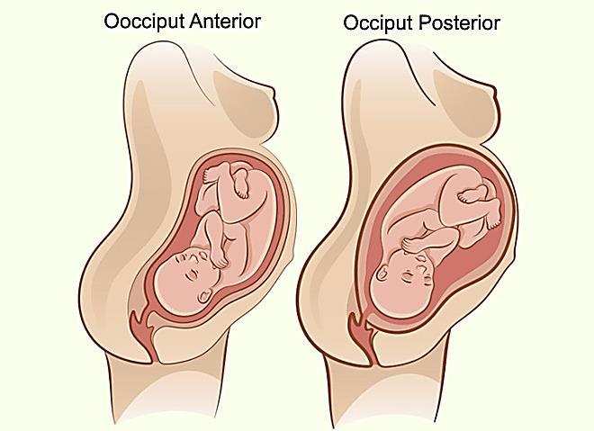
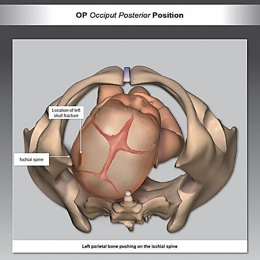
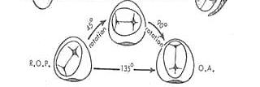
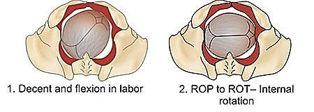

Occipitoposterior Position — the most common fetal malposition
Definition, etiology (fetal + maternal causes), the four positions, primary vs secondary OP, incidence at the onset of labor, diagnosis during pregnancy and during labor, the four mechanisms of labor (long anterior rotation 90%, direct OP face-to-pubis 6%, persistent OP 3%, deep transverse arrest 1%), and the management of OP position in the first and second stage of labor plus its complications.
Definition + 4 positions14 causes (7 fetal + 7 maternal)Incidence ~10% at onset of labor4 mechanisms of laborFirst + second stage management5 source diagrams · 0 external visualsNote: 1 source image omitted (watermarked)
1 · Intended Learning Outcomes (ILOs)
At the end of this chapter the student should be able to:
To understand the definition and etiology of this malposition
To be able to describe the diagnosis of occipitoposterior position
To be able to describe the management of this vertex malposition
Definition: it is vertex presentation in which the fetal back is directed posteriorly.
Occiput Anterior vs Occiput Posterior — at a glance
Source Image

Source: Provided Material (Chapter 22 — Occipitoposterior Position)
Figure 1 — Comparison of Occiput Anterior (left) and Occiput Posterior (right) fetal positions. In the OA position, the fetal occiput faces the maternal anterior abdominal wall; in the OP position, the fetal occiput faces the maternal spine. Source label contains a typographical error: "Oocciput Anterior" (double-o); preserved verbatim per source-faithfulness rule.
Mnemonic:OP = Occiput Posterior = "Occiput to the Posterior" = baby's back toward the mother's back (also called "sunny-side up"). The MOST COMMON fetal malposition.
📝 Question 1 of 5
What is the most common fetal malposition?
Occipitoposterior (OP) position is the most common fetal malposition. It is a vertex presentation in which the fetal back is directed posteriorly.
📝 Question 2 of 5
In occipitoposterior position, the fetal back is directed:
In OP position, the fetal back is directed posteriorly (baby's back toward the mother's back), also called 'sunny-side up'.
📝 Question 3 of 5
The clinical significance of this section is:
Understanding these concepts directly informs clinical management.
📝 Question 4 of 5
Which of the following best defines this condition?
A definition describes the essential nature of a condition as a deviation from normal.
📝 Question 5 of 5
The incidence of this condition is highest in which population?
Incidence varies by condition — each has its own epidemiology and risk profile.
3 · Etiology — general causes of malpresentations and malpositions
The chapter lists two parallel cause-groups: fetal causes and maternal causes.
A · Fetal causes
Marked deflexion of fetal head.
Prematurity.
Macrosomia.
Multiple pregnancy.
Polyhydramnios.
Congenital anomalies (anencephaly and hydrocephalus).
Cord around the neck.
B · Maternal causes
Shape of the pelvic inlet: Android and anthropoid pelvis.
Pendulus abdomen.
Placenta previa.
Pelvic tumors.
Uterine anomalies (bicornuate and septate uterus).
Abnormal uterine contractions.
Note: The source lists 7 fetal causes and 6 maternal causes. Two of the maternal causes (Android and Anthropoid pelvis shapes — see Chapter 20, Caldwell–Moloy classification) and cord around the neck are the most commonly tested associations in exams.
📝 Question 1 of 5
Which of the following is a fetal cause of occipitoposterior position?
Prematurity is a fetal cause of OP position. Android pelvis, pendulous abdomen, and placenta previa are maternal causes.
📝 Question 2 of 5
Which pelvic shapes predispose to occipitoposterior position?
Android and anthropoid pelvis shapes predispose to OP position due to their narrowed anterior pelvic architecture.
📝 Question 3 of 5
Which of the following is a known risk factor?
Multiple risk factors often contribute to obstetric conditions.
📝 Question 4 of 5
In obstetric practice, this knowledge helps:
Comprehensive knowledge enables prevention, early diagnosis, and optimal management.
📝 Question 5 of 5
The etiology of this condition involves:
Most obstetric conditions have multifactorial etiology.
4 · Positions of OP — four named positions
Depending on where the fetal occiput lies within the maternal pelvis, OP is classified into four named positions:
1 · Left O.P.
When the occiput is placed over the left sacroiliac joint.
2 · Right O.P.
When the occiput is placed over the right sacroiliac joint. More common than left OP — see §5.
3 · Direct O.P.
When the occiput lies over the sacrum.
4 · Occipito transverse
When the occiput lies transverse in the pelvis.
Mechanism of OP — bony impingement at the ischial spine
Source Image

Source: Provided Material (Chapter 22 — Occipitoposterior Position)
Figure 2 — "OP Occiput Posterior Position" — inferior view of the fetal head engaged in the maternal pelvis in the OP position. The left parietal bone of the fetal skull is shown impinging on the ischial spine of the maternal pelvis — the impaction point that can produce a skull fracture at this location during a difficult OP delivery.
Danger — skull fracture at the ischial spine: In the OP position, the fetal left parietal bone can be pressed against the maternal ischial spine during descent. This is a known mechanism of iatrogenic neonatal skull fracture, particularly with prolonged second stage or instrumental delivery in OP.
📝 Question 1 of 5
In Right Occipitoposterior (ROP) position, the occiput is placed over the:
In Right O.P., the occiput is placed over the right sacroiliac joint. ROP is more common than left OP.
📝 Question 2 of 5
Which of the following is NOT one of the four named positions of OP?
The four named positions are: Left O.P., Right O.P., Direct O.P., and Occipito transverse. Oblique O.P. is not a named position.
📝 Question 3 of 5
The clinical significance of this section is:
Understanding these concepts directly informs clinical management.
📝 Question 4 of 5
Which of the following is a key concept?
Understanding key concepts is fundamental to clinical management.
📝 Question 5 of 5
When assessing this aspect, the most important factor is:
Assessment requires integration of clinical, laboratory, and imaging findings.
5 · Types and incidence
Types — primary vs secondary OP
Type
Definition
Primary OP
OP position present before onset of labor.
Secondary OP
That occurs during labor.
Incidence
At the onset of labor: about 10%.
Right OP is more common than left OP due to:
Dextrorotation of the uterus (physiologic rightward rotation), and
Presence of the sigmoid colon on the left side (which deflects the fetal occiput to the right).
Source Image

Source: Provided Material (Chapter 22 — Occipitoposterior Position)
Figure 3 — Hand-drawn diagram of the cardinal movement of internal rotation during labor. The fetal head starts in R.O.P. (Right Occiput Posterior) and rotates through 45° → 90° → 135° (cumulative) to reach O.A. (Occiput Anterior). The X and + marks inside the egg-shapes represent the sagittal suture and the anterior / posterior fontanelles. Note: small partial sketches in the upper corners are remnants from the source page; they are part of the cropped source figure and are kept here per source-faithfulness rule.
📝 Question 1 of 5
What is the incidence of OP position at the onset of labor?
At the onset of labor, the incidence of OP position is about 10%.
📝 Question 2 of 5
Right OP is more common than left OP due to:
Right OP is more common due to dextrorotation (rightward rotation) of the uterus and the presence of the sigmoid colon on the left side, which deflects the fetal occiput to the right.
📝 Question 3 of 5
Which of the following is a key concept?
Understanding key concepts is fundamental to clinical management.
📝 Question 4 of 5
Classification is based on:
Most classifications combine anatomical and clinical parameters.
📝 Question 5 of 5
In obstetric practice, this knowledge helps:
Comprehensive knowledge enables prevention, early diagnosis, and optimal management.
6 · Diagnosis
During pregnancy
Abdominal Examination
Inspection: flat abdomen below level of the umbilicus.
Fundal level: corresponds to period of amenorrhea.
Fundal grip: buttocks.
Umbilical grip: fetal limbs are felt easily near midline but fetal back felt away from midline (difficult to outline).
Pelvic grip: non engaged fetal head and deflexed head.
Auscultation: FHS heard near flanks.
Vaginal Examination
Posterior fontanel felt posteriorly.
Ultrasound
Ultrasound: confirm the diagnosis.
During labor
As in pregnancy but:
PROM (premature rupture of membranes) may occur early.
Delayed progress of labor.
High fetal head (head remains high above the pelvic inlet).
Clinical pearl: On abdominal examination, the OP fetus has a flat abdomen below the umbilicus (because the fetal back is posterior, the limbs and small parts are felt anteriorly). Fetal heart sounds are heard in the flanks rather than in the midline.
📝 Question 1 of 5
On abdominal examination of a patient with OP position, the abdomen typically appears:
In OP position, the abdomen appears flat below the level of the umbilicus on inspection because the fetal back is posterior.
📝 Question 2 of 5
Where are fetal heart sounds best heard in OP position?
In OP position, FHS are heard near the flanks (the fetal back is posterior and away from the maternal abdominal wall).
📝 Question 3 of 5
The gold standard diagnostic test is:
The best diagnostic method varies by condition — some rely on imaging, others on lab tests or clinical findings.
📝 Question 4 of 5
Which clinical finding is most suggestive of this diagnosis?
Clinical presentation differs by condition and guides diagnostic testing.
📝 Question 5 of 5
When assessing this aspect, the most important factor is:
Assessment requires integration of clinical, laboratory, and imaging findings.
7 · Mechanism of labor — four possible outcomes
OP position has four possible mechanisms of labor with the following frequencies:
Source Image

Source: Provided Material (Chapter 22 — Occipitoposterior Position)
Figure 4 — "Descent and Flexion in labor" and "ROP to ROT — Internal rotation". Two panels showing two of the cardinal movements of labor: (left) descent with flexion of the fetal head in OA position; (right) internal rotation from ROP to ROT as the head negotiates the pelvic outlet.
A · Long anterior rotation (90%)
The most common outcome. The head rotates 3/8 of a circle (135°) anteriorly to become direct occipito-anterior. Seven steps:
Increased flexion.
Internal rotation of fetal head 3/8 cycle anteriorly to become direct occipito anterior.
Descent as OA.
Extension.
Restitution.
External rotation.
Delivery of shoulders and trunk.
B · Direct Occipitoposterior (face to pubis) (6%)
The head delivers in the OP position. Four steps:
Further descent occurs.
Flexion.
Restitution.
External rotation and delivery as face to pubis.
C · Persistent OP (3%)
No rotation occurs → obstructed labor.
D · Deep transverse arrest (1%)
Short anterior rotation 1/8 cycle → obstructed labor.
Why the persistent OP and deep transverse arrest are dangerous: In both of these outcomes, rotation is incomplete. The fetal head cannot progress through the pelvic outlet → obstructed labor develops. This is an obstetric emergency requiring either instrumental delivery (vacuum / forceps) or cesarean section (see §8 — Management of arrested OP position).
📝 Question 1 of 5
What is the most common outcome of the mechanism of labor in OP position?
Long anterior rotation (90%) is the most common outcome. The head rotates 3/8 of a circle (135°) anteriorly to become direct occipito-anterior.
📝 Question 2 of 5
Which mechanism of labor in OP position leads to obstructed labor when no rotation occurs?
Persistent OP (3%) occurs when no rotation occurs, leading to obstructed labor. Deep transverse arrest (1%) also leads to obstructed labor.
📝 Question 3 of 5
In obstetric practice, this knowledge helps:
Comprehensive knowledge enables prevention, early diagnosis, and optimal management.
📝 Question 4 of 5
Which of the following is a key concept?
Understanding key concepts is fundamental to clinical management.
📝 Question 5 of 5
The clinical significance of this section is:
Understanding these concepts directly informs clinical management.
Evacuate the bladder and rectum (full bladder / rectum impede descent).
Avoid PROM (premature rupture of membranes — especially relevant because OP is associated with early PROM; see §9).
Close maternal and fetal observation.
During second stage of labor
Two pathways — watchful waiting vs early intervention:
Pathway 1 — Wait for descent and rotation
1- Wait for descent and long anterior rotation to allow normal vaginal delivery. This is the default approach in 90% of cases (see §7 outcome A).
Pathway 2 — Early CS
Early CS (caesarean section) is indicated in:
Prolonged labor.
Poor progress of labor.
No rotation occurred.
Abnormal uterine contractions.
Fetal distress.
Special case — In direct occipito-posterior
Episiotomy is done to avoid perineal laceration when the head delivers face-to-pubis (the wider occipito-frontal diameter stretches the perineum).
Management of arrested OP position
Scenario
Preferred management
Direct OP position and deep transverse arrest
CS is preferred if the head is not engaged.
Direct OP position and deep transverse arrest
Vacuum or forceps if the head is engaged.
Engagement is the key decision point: If the head is not yet engaged in the pelvis, instrumental delivery is contraindicated and CS is performed. If the head is engaged, trial of instrumental delivery (vacuum or forceps) is appropriate in skilled hands.
📝 Question 1 of 5
During the first stage of labor in OP position, which of the following is recommended?
Recommendations during first stage include: avoid unnecessary P.V. examinations, avoid uterine inertia, evacuate the bladder and rectum, avoid PROM, and maintain close maternal and fetal observation.
📝 Question 2 of 5
In direct occipitoposterior position delivering face-to-pubis, what is recommended to avoid perineal laceration?
Episiotomy is done in direct OP to avoid perineal laceration when the head delivers face-to-pubis, as the wider occipito-frontal diameter stretches the perineum.
📝 Question 3 of 5
Which factor most influences the choice of treatment?
Obstetric management is tailored to gestational age, maternal status, and available resources.
📝 Question 4 of 5
In obstetric practice, this knowledge helps:
Comprehensive knowledge enables prevention, early diagnosis, and optimal management.
📝 Question 5 of 5
The clinical significance of this section is:
Understanding these concepts directly informs clinical management.
9 · Complications of OP position
OP position is associated with the following complications:
Maternal complications
Early PROM.
Cord prolapse.
Prolonged labor.
Obstructed labor.
Complications of obstructed labor.
Vaginal tears.
Cervical tears.
Rupture uterus.
Fetal complications
Fetal hypoxia.
Fetal injuries (e.g. skull fracture from ischial-spine impingement — see Figure 2).
DANGER — rupture uterus: Persistent OP with obstructed labor is a leading cause of rupture uterus. The obstructed fetal head drives the uterine musculature against the bony pelvis, eventually leading to full-thickness uterine wall rupture. This is a maternal life-threatening emergency.
📝 Question 1 of 5
Which of the following is a maternal complication of OP position?
Maternal complications of OP position include: early PROM, cord prolapse, prolonged labor, obstructed labor, vaginal tears, cervical tears, and rupture uterus.
📝 Question 2 of 5
A fetal skull fracture in OP position can occur due to impingement of which fetal bone against the ischial spine?
In OP position, the fetal left parietal bone can be pressed against the maternal ischial spine during descent, leading to iatrogenic neonatal skull fracture.
📝 Question 3 of 5
In obstetric practice, this knowledge helps:
Comprehensive knowledge enables prevention, early diagnosis, and optimal management.
📝 Question 4 of 5
Fetal complications may include:
Fetal well-being is closely linked to maternal condition — multiple fetal complications are possible.
📝 Question 5 of 5
A potential maternal complication includes:
Obstetric conditions can lead to hemorrhage, infection, thromboembolism, and other complications.
Student activity · Assessment · References
10 · Student activity · Assessment · References
Student activity
Each group of students is requested to design an algorithm summarizing this chapter components including definition, etiology, clinical diagnosis and management options.
The PDF source for this chapter contains 6 embedded images. Of these, 4 are embedded in this infographic as green .src-viz cards. All 6 images are extracted to extracted_images/22_occipitoposterior_position/ for archival, with the following disposition:
Image inventory and disposition:
Figure 1 (img-000): Side-by-side OA vs OP fetal position diagrams — EMBEDDED in §2 — provided material.
Figure 2 (img-001): 3D rendering — OP position with ischial spine impingement & skull fracture — EMBEDDED in §4 — provided material.
Figure 3 (img-002): Hand-drawn diagram of cardinal movement of internal rotation (R.O.P. → O.A.) — EMBEDDED in §5 — provided material.
Figure 4 (img-005): Two panels — descent & flexion, ROP to ROT internal rotation — EMBEDDED in §7 — provided material.
Figure 5 (img-003): Diagram of crowning of fetal head at delivery — OMITTED because it carries a third-party watermark ("Mom Junction") in the lower-right corner. Per the visual rules, watermarked images are not embedded. The educational concept of crowning is described in the §7 mechanism and §9 complications text.
Figure 6 (img-004): Top-down view of the female pelvic floor and bony pelvis — OMITTED because the source PDF has no caption or text reference for this image. It is a supplementary visual aid only and its content is not described in the chapter text. It is preserved in the extracted_images folder for archival.
No external images were used in this chapter. All embedded visuals are sourced from the provided Book Obstetrics 2025-2026 PDF (the 2 omitted figures are documented above).